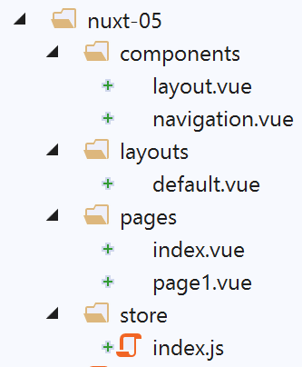
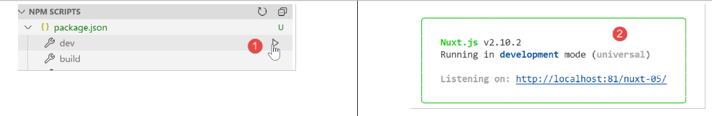
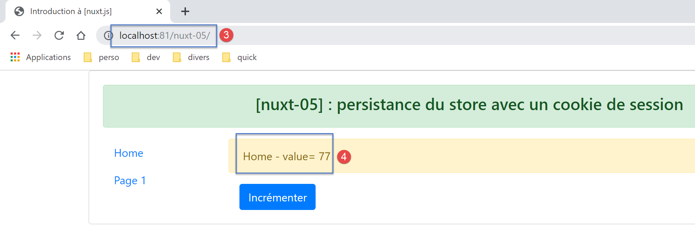
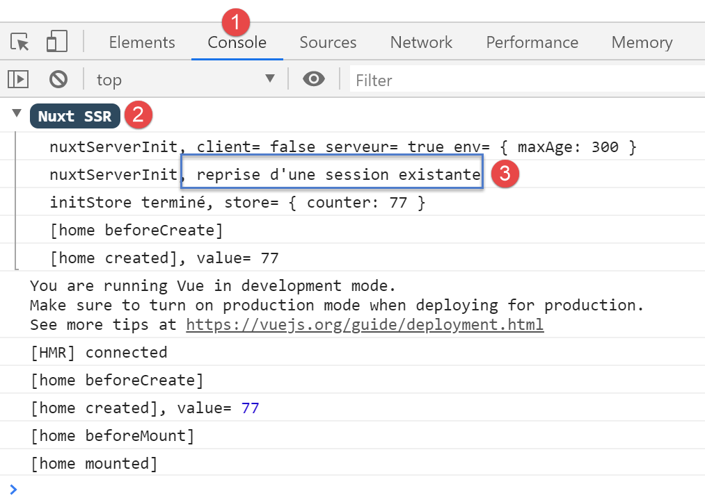
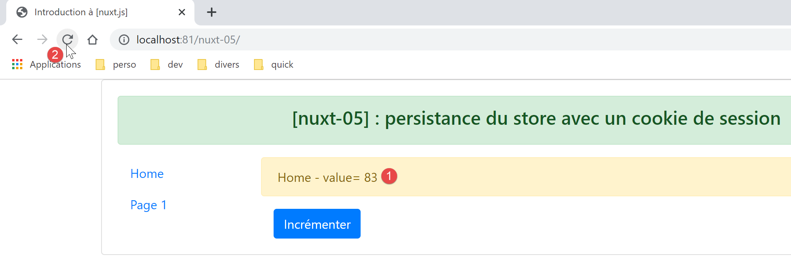
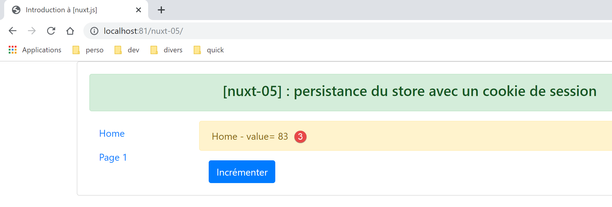
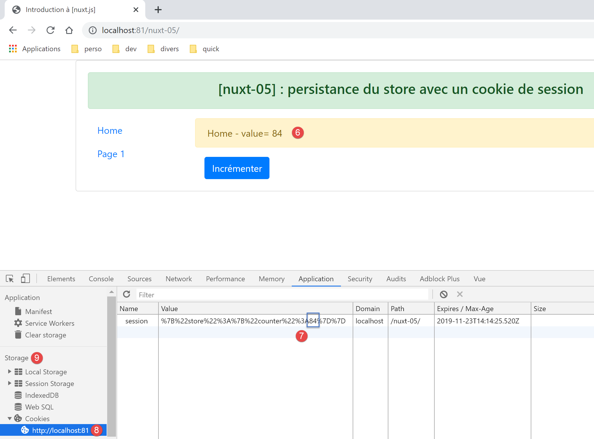

8. Example [nuxt-05]: Store persistence with a session cookie
Objective: We want the [Vuex] store not to be reset with every request to the server. To do this, we will use a session cookie:
- the store will be initialized by the server and placed by it in a session cookie;
- the client browser will receive this session cookie and automatically send it with every new request to the server;
- the server can then retrieve this session cookie and work with the store it contains, a store updated by the client;
8.1. Overview
The [nuxt-05] project is initially created by cloning the [nuxt-04] project:

We will see that only the file [store / index.js] will change.
To use cookies with [nuxt], we will use the [cookie-universal-nuxt] module, which we install with [yarn] in a VSCode terminal:

- In [4], type the command [yarn add cookie-universal-nuxt];
A new module is thus added to the [package.json] file of the [dvp] project:
...
},
"dependencies": {
"@nuxtjs/axios": "^5.3.6",
"bootstrap": "^4.1.3",
"bootstrap-vue": "^2.0.0",
"cookie-universal-nuxt": "^2.0.19",
"nuxt": "^2.0.0"
},
8.2. The [nuxt.config.js] configuration file
In order for [nuxt] to use the cookies from [cookie-universal-nuxt], this module must be declared in the [nuxt.config.js] configuration file:
...
],
/*
** Nuxt.js modules
*/
modules: [
// Doc: https://bootstrap-vue.js.org
'bootstrap-vue/nuxt',
// Doc: https://axios.nuxtjs.org/usage
'@nuxtjs/axios',
// https://www.npmjs.com/package/cookie-universal-nuxt
'cookie-universal-nuxt'
],
...
- line 12, the module [cookie-universal-nuxt] is added to the array of modules [6] from [nuxt];
The final [nuxt.config.js] file is as follows:
export default {
mode: 'universal',
/*
** Headers of the page
*/
head: {
title: 'Introduction à [nuxt.js]',
meta: [
{ charset: 'utf-8' },
{ name: 'viewport', content: 'width=device-width, initial-scale=1' },
{
hid: 'description',
name: 'description',
content: 'ssr routing loading asyncdata middleware plugins store'
}
],
link: [{ rel: 'icon', type: 'image/x-icon', href: '/favicon.ico' }]
},
/*
** Customize the progress-bar color
*/
loading: { color: '#fff' },
/*
** Global CSS
*/
css: [],
/*
** Plugins to load before mounting the App
*/
plugins: [],
/*
** Nuxt.js dev-modules
*/
buildModules: [
// Doc: https://github.com/nuxt-community/eslint-module
'@nuxtjs/eslint-module'
],
/*
** Nuxt.js modules
*/
modules: [
// Doc: https://bootstrap-vue.js.org
'bootstrap-vue/nuxt',
// Doc: https://axios.nuxtjs.org/usage
'@nuxtjs/axios',
// https://www.npmjs.com/package/cookie-universal-nuxt
'cookie-universal-nuxt'
],
/*
** Axios module configuration
** See https://axios.nuxtjs.org/options
*/
axios: {},
/*
** Build configuration
*/
build: {
/*
** You can extend webpack config here
*/
extend(config, ctx) {}
},
// source code directory
srcDir: 'nuxt-05',
// router
router: {
// application URL root
base: '/nuxt-05/'
},
// server
server: {
// service port, default 3000
port: 81,
// network addresses listened to, default localhost: 127.0.0.1
// 0.0.0.0 = all the machine's network addresses
host: 'localhost'
},
// environment
env: {
maxAge: 60 * 5
}
}
- line 79: the key [env] has been added to the file. This key is a reserved word. The elements declared in this object are available via the [context.env] object in the application elements;
- line 80: the [maxAge] attribute will be the maximum lifetime of the session cookie, measured from the last time the cookie was initialized. This duration is expressed in seconds. Here, we have set a lifetime of 5 minutes;
8.3. The principle of store persistence
Cookies exchanged between the client and the server are available on both sides (client and server) in:
- [context.app.$cookies] wherever the object [context] is available, i.e., just about everywhere;
- [this.$cookies] within a view;
We obtain a specific cookie with the expression [...$cookies.get(‘nom_du_cookie’)]. We set the value of a cookie with the expression [...$cookies.set(‘nom_du_cookie’, valeur_du_cookie)].
The principle of the store persistence cookie is as follows:
- when the server initializes the store in the function [nuxtServerInit], the store’s state will be stored in a cookie named ‘session’;
- the ‘session’ cookie will then be part of the server’s response HTTP. We know that a browser sends back to the server the cookies that the server sent to it. It does this with every new request it makes to the server. We also know that the server sends the store within the page it sends to the client;
- within the browser, the client application retrieves the store sent by the server and then performs its tasks. We will ensure that every time it modifies the store, its new state is stored in the ‘session’ cookie saved by the browser;
- if the user forces a call to the server, the client browser will automatically send back all the cookies that the server previously sent to it, including the cookie named ‘session’;
- when, following this request, the server resets the store again, it will retrieve the ‘session’ cookie and initialize the store’s state with its value;
- there will therefore be continuity of the store between the client and the server;
8.4. Initializing the store
The store is implemented in the file [store / index.js]:
/* eslint-disable no-console */
export const state = () => ({
// meter
counter: 0
})
export const mutations = {
// increment counter by one [inc] value
increment(state, inc) {
state.counter += inc
},
// state replacement
replace(state, newState) {
for (const attr in newState) {
state[attr] = newState[attr]
}
}
}
export const actions = {
async nuxtServerInit(store, context) {
// who executes this code?
console.log('nuxtServerInit, client=', process.client, 'serveur=', process.server, 'env=', context.env)
// waiting for a promise to be fulfilled
await new Promise(function(resolve, reject) {
// this is normally an asynchronous function
// we simulate it with a one-second wait
setTimeout(() => {
// init session
initStore(store, context)
// success
resolve()
}, 1000)
})
}
}
function initStore(store, context) {
// is there a session cookie in the current request?
const cookies = context.app.$cookies
const session = cookies.get('session')
if (!session) {
// no existing session
console.log("nuxtServerInit, initialisation d'une nouvelle session")
// on initialise le store
store.commit('increment', 77)
} else {
console.log("nuxtServerInit, reprise d'une session existante")
// update the store with the session cookie
store.commit('replace', session.store)
}
// put the store in the session cookie
cookies.set('session', { store: store.state }, { path: context.base, maxAge: context.env.maxAge })
// log
console.log('initStore terminé, store=', store.state)
}
Comments
- lines 2-5: the store will consist of a counter;
- lines 9-11: this counter can be incremented;
- lines 13-17: the store’s state can be initialized from a new state. This function is included to demonstrate a possible initialization of the store when it is not limited to just a counter, as in this case;
- lines 21-35: the function [nuxtServerInit] has not changed;
- line 30: when the one-second timeout has elapsed, the store is initialized using the function in lines 38–56;
- lines 40–41: we start by retrieving the cookie named ‘session’:
- during the first execution of the application and during the first request made to the server, this cookie will not yet exist. It will then be created (line 53) and sent to the client browser;
- during the same execution of the application and during requests #2, #3, ... made to the server, this cookie will exist because the client browser will send it back with each new request made to the server;
- During a second execution of the application and during the first request made to the server, this cookie may also exist. Indeed, at the end of step 1, the cookie was stored on the browser with a specific lifetime. If this lifetime has not expired, the cookie named ‘session’ will be sent with the first request made to the server
In summary, for each request made to the server: if the ‘session’ cookie is already stored in the client browser, the server will receive it; otherwise, it will not.
- Lines 42–47: If the server does not receive the session cookie, then the store is initialized by line 46;
- then, in line 53, a cookie named ‘session’ will be created and placed in the server’s HTTP response. The value of the cookie is the [{ store: store.state }] object. It is therefore the state of the store, and not the store itself, that is placed in the session cookie;
- the third parameter of the [set] function is an options object:
- [path] specifies to which URL this cookie should be sent back. [context.base] is the base URL for the [nuxt-05] application. This is defined in the [nuxt.config.js] file:
// router
router: {
// application URL root
base: '/nuxt-05/'
},
- [maxAge] is the cookie's lifetime in seconds on the browser. After this time, the browser no longer sends it back to the server. [context.env.maxAge] again returns a value stored in the file [nuxt.config.js]:
[env] is a reserved keyword in the configuration file. Here, the lifetime is set to 5 minutes. This duration is measured from the last time the browser received the session cookie. After this time, the cookie will not be sent back to the server, which will then need to start a new session;
- lines 48–50: if the server receives the session cookie, then the store’s state is initialized with the [store] object from the session cookie. Recall that this object contains the saved state of the store;
- then, on line 53, the session cookie is placed in the response sent to the client browser:
- the [get] function retrieves the session cookie from the request received by the server;
- the function [set] places the session cookie in the server’s response to the client browser;
- then, on line 53, the session cookie is placed in the response sent to the client browser:
8.5. Incrementing the store counter
The counter increment in the [index.vue] page works as follows:
// event management
methods: {
incrementCounter() {
console.log('incrementCounter')
// counter increment of 1
this.$store.commit('increment', 1)
// change display value
this.value = this.$store.state.counter
// store in session cookie
this.$cookies.set('session', { store: this.$store.state }, { path: this.$nuxt.context.base, maxAge: this.$nuxt.context.env.maxAge })
}
}
On the client side, every time the store is modified, it must be saved to the session cookie. This is because the user can manually request a URL at any time, and we must then be able to send an up-to-date store to the server. That is why, on line 10, after incrementing the store counter, we save its state in the session cookie:
- cookies are available in the [this.$cookies] property;
- the state of the store [this.$store.state] is saved in the cookie associated with the key [store];
- the cookie path is [context.base]. In a view, the context is available in [this.$nuxt.context];
- the cookie’s lifetime is [context.env.maxAge], available here in the property [this.$nuxt.context.env.maxAge];
8.6. Running the example [nuxt-05]
We launch the [nuxt-05] application:

The following screenshots are from a Chrome browser. We request the URL [http://localhost:81/nuxt-05/]. Don’t forget the trailing / after /nuxt-05, otherwise you won’t get the expected results:

- In [4], we obtained the initial value of the store (77);
Let’s examine the browser logs (F12):

- in [5-6], the server logs;
- in [7], we see that the server starts a new session. This means it did not receive a session cookie;
- in [8], initialization of the counter with the value 77;
- in [9], the server’s page (9) and the client’s page (10) both display the same counter value;
Now let’s look at the cookies received by the browser:

- In [1], select the [Application] tab, then option, [Cookies], and [2]. From all the cookies in your browser, select the one from the domain [http://localhost:81];
- in [4], the cookie named ‘session’. If you don’t have it, reload the page [F5]: perhaps its 5-minute lifespan has expired;
- in [5], the cookie’s value. Although it is not very legible due to the encoding of the characters { :, we can make out the value 77 from the counter;
- in [6], the URL of the cookie: every time this URL is requested, the browser will send the cookie to the server;
- in [7], the cookie’s expiration time. Once this time has passed, the cookie will be deleted from the browser;
Make sure you have this cookie. If you don’t have it, reload the page (F5). Once you have the page with its cookie, reload the page again (F5). The logs will then look like this:

This time, in [3], the server has successfully retrieved the session cookie. It was sent to the server by the client browser.
Now, increment the counter, then occasionally reload the current page (F5), whether it is [index] or [page1], you should notice that the counter does not reset to 77 as in the example [nuxt-04] but retains the value it had in the client browser before the page was reloaded:


The browser logs are then as follows:

Note: For testing purposes, you may need to delete the session cookie [5] stored in the browser to start a new session, initialized by the server, during the next request to it.
Finally, let’s demonstrate the effect of the [incrementCounter] function on the [index] page on the session cookie stored in the client browser:
// event management
methods: {
incrementCounter() {
console.log('incrementCounter')
// counter increment of 1
this.$store.commit('increment', 1)
// change display value
this.value = this.$store.state.counter
// store in session cookie
this.$cookies.set('session', { store: this.$store.state }, { path: this.$nuxt.context.base, maxAge: this.$nuxt.context.env.maxAge })
}
}
- line 10: the change to the counter is reflected in the session cookie;
Let’s verify this. We start with the following situation:

- in [4], the session cookie counter correctly reflects the displayed value [1];
Now, let's increment the counter once to [5]. The session cookie in [4] changes as follows:

- to [7]; the session cookie counter has indeed increased to 84. To see this, you need to refresh the view [8]. To do this, select another option from the [Storage] [9], then reselect the option [8]. The new session cookie value should then appear;